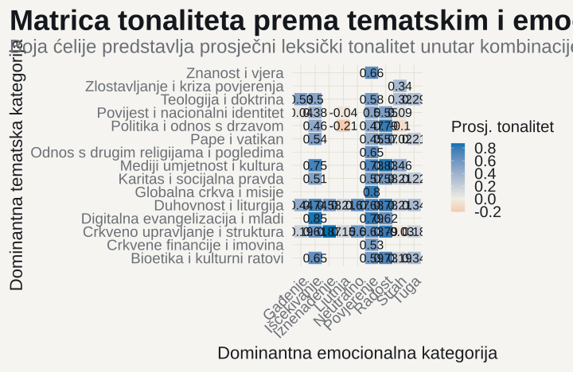
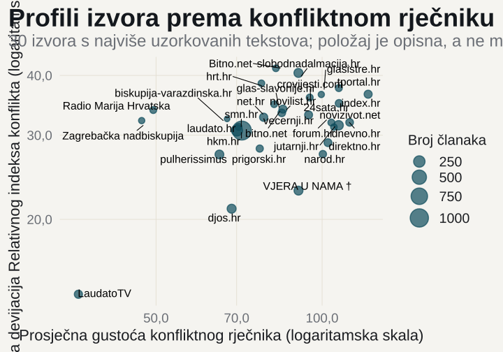
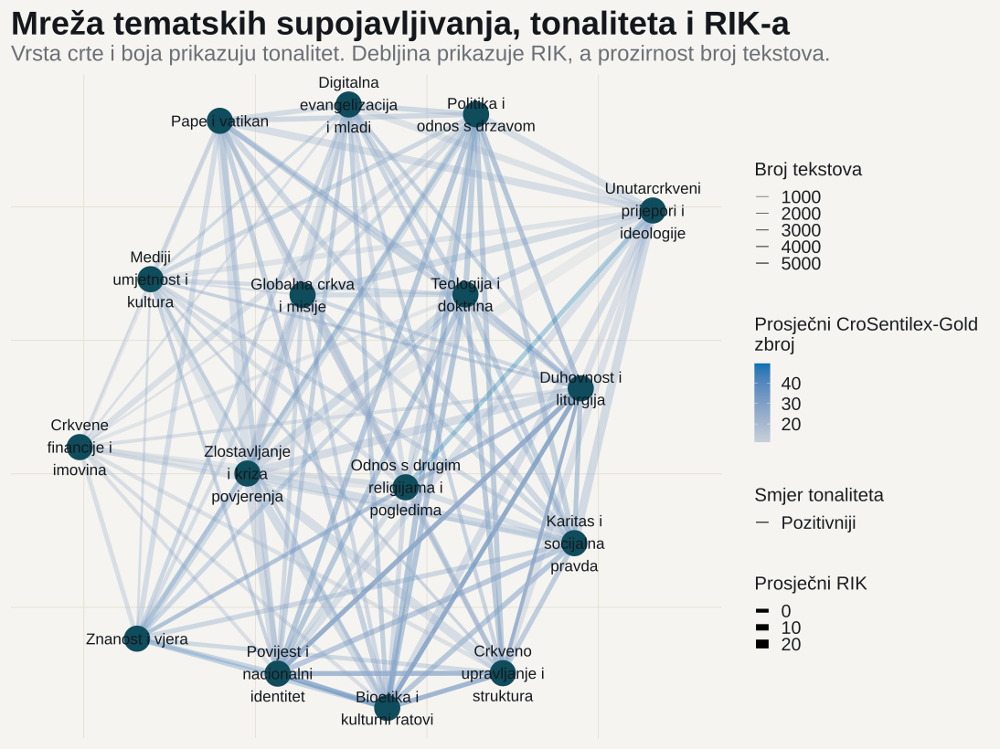

Atmosfera diskursa — emocionalna i konfliktna mapa katoličkog digitalnog prostora (2021.–2026.)
Emocije i tonalitet diskursa
Atmosfera diskursa
Tonalitet
Emocije
Atmosfera diskursa opisuje leksički tonalitet, emocionalne oznake i Relativni indeks konflikta u dijelu korpusa DigiKat.
Uvod u analizu emocionalne i konfliktne strukture diskursa
Ažurirano24. kolovoza 2026. Podaci zaključno s11. lipnja 2026. StatusPreliminarno
Sažetak u 60 sekundi
Mapa opisuje kako se leksički tonalitet i konfliktni rječnik razlikuju među temama i izvorima.
- Prosječni tonalitet ovisi o kombinaciji tematske i emocionalne oznake.
- Izvori se razlikuju po gustoći konfliktnog rječnika i varijabilnosti RIK-a.
- Često supojavljivanje tema ne znači nužno i visok RIK.
Može se zaključiti gdje se u uzorku pojavljuju leksičke razlike. Ne može se zaključiti što je autor namjeravao ili kako je publika doživjela tekst. Definicije rječnika i RIK-a nalaze se u Metodologiji.
3
Leksikona tonaliteta
8
Emocionalnih kategorija (lilaHR)
8.250
Dokumenata u uzorku
2021.–2026.
Razdoblje
Kakvim se rječnikom govori o katoličkim temama, i uz koje se teme najčešće javlja oštar ton? Nakon kartografiranja aktera i platformi te identifikacije tematskih kategorija, na to pitanje odgovara treća analitička mapa Atmosfera diskursa. Ona odgovara i na istraživačko pitanje Q4 o tome kako se ton mijenja. Riječ je o automatiziranim leksičkim mjerama. One opisuju riječi u tekstu, ali same ne utvrđuju namjeru autora, reakciju publike ni komunikacijsku strategiju.
Analitički okvir strukturiran je u tri komponente. Prva spaja leksički tonalitet i dominantnu emocionalnu kategoriju. Druga je Relativni indeks konflikta (RIK), odnosno razlika između opažene gustoće konfliktnog rječnika i očekivanja izvedenog iz prosjeka izvora i teme. Treća je mreža supojavljivanja tematskih kategorija.
Mjereno je na dijelu korpusa od 413.985 objava, na 8.250 dokumenata. Veličina i način izvlačenja tog uzorka te sami rječnici opisani su u Metodologiji. Godina 2026. nepotpuna je.
Tonalitet i emocionalne oznake
Analiza razlikuje dvije leksičke dimenzije. Prva je pozitivna ili negativna obojenost teksta prema rječnicima tonaliteta. Druga je dominantna emocionalna kategorija prema leksikonu lilaHR. Nazivi emocija označavaju prevladavajuće leksičke tragove u tekstu i nisu mjera emocionalnog stanja autora ili publike.
Matrica tonaliteta i emocionalnih kategorija
Sljedeća vizualizacija prikazuje opažene kombinacije tematskih i dominantnih emocionalnih kategorija koje imaju više od tri teksta u uzorku. Boja svake ćelije označava njihov prosječni leksički tonalitet. Plave nijanse označavaju pozitivnije, a crvene negativnije vrijednosti.
Pitanje. Kako se prosječni leksički tonalitet razlikuje među kombinacijama tema i emocija?
Nalaz. Razlike se pojavljuju u oba smjera, a ispisane vrijednosti omogućuju čitanje bez oslanjanja na boju.
Sažetak grafikona. Najpozitivniji ponderirani prosjek imaju oznake Radost i Iznenađenje, a najnegativniji Ljutnja i Strah.
{kind=link}
Prikažite podatke u tablici
| Dominantna tema | Dominantna emocija | Prosječni tonalitet | Dokumenti |
|---|---|---|---|
| Bioetika i kulturni ratovi | Iščekivanje | 0.6510069 | 38 |
| Bioetika i kulturni ratovi | Povjerenje | 0.5876667 | 245 |
| Bioetika i kulturni ratovi | Radost | 0.7296167 | 120 |
| Bioetika i kulturni ratovi | Strah | 0.1930822 | 38 |
| Bioetika i kulturni ratovi | Tuga | 0.3361927 | 16 |
| Crkvene financije i imovina | Povjerenje | 0.5326922 | 4 |
| Crkveno upravljanje i struktura | Gađenje | 0.1866665 | 5 |
| Crkveno upravljanje i struktura | Iznenađenje | 0.8717944 | 13 |
| Crkveno upravljanje i struktura | Iščekivanje | 0.6062853 | 267 |
| Crkveno upravljanje i struktura | Ljutnja | 0.1528719 | 37 |
| Crkveno upravljanje i struktura | Neutralno | 0.5999995 | 5 |
| Crkveno upravljanje i struktura | Povjerenje | 0.6325165 | 1710 |
| Crkveno upravljanje i struktura | Radost | 0.7921189 | 136 |
| Crkveno upravljanje i struktura | Strah | -0.0340772 | 136 |
| Crkveno upravljanje i struktura | Tuga | 0.1801865 | 25 |
| Digitalna evangelizacija i mladi | Iščekivanje | 0.8499998 | 5 |
| Digitalna evangelizacija i mladi | Povjerenje | 0.7926957 | 27 |
| Digitalna evangelizacija i mladi | Radost | 0.6179486 | 4 |
| Duhovnost i liturgija | Gađenje | 0.4416665 | 10 |
| Duhovnost i liturgija | Iznenađenje | 0.5757571 | 11 |
| Duhovnost i liturgija | Iščekivanje | 0.7404296 | 646 |
| Duhovnost i liturgija | Ljutnja | 0.2066822 | 37 |
| Duhovnost i liturgija | Neutralno | 0.6666661 | 6 |
| Duhovnost i liturgija | Povjerenje | 0.6778145 | 2643 |
| Duhovnost i liturgija | Radost | 0.7767185 | 408 |
| Duhovnost i liturgija | Strah | 0.2121985 | 181 |
| Duhovnost i liturgija | Tuga | 0.3359287 | 62 |
| Globalna crkva i misije | Povjerenje | 0.8032035 | 4 |
| Karitas i socijalna pravda | Iščekivanje | 0.5104761 | 13 |
| Karitas i socijalna pravda | Povjerenje | 0.5713922 | 100 |
| Karitas i socijalna pravda | Radost | 0.5775861 | 4 |
| Karitas i socijalna pravda | Strah | 0.2103397 | 11 |
| Karitas i socijalna pravda | Tuga | 0.2242936 | 10 |
| Mediji umjetnost i kultura | Iščekivanje | 0.7499200 | 29 |
| Mediji umjetnost i kultura | Povjerenje | 0.7317127 | 120 |
| Mediji umjetnost i kultura | Radost | 0.8323722 | 37 |
| Mediji umjetnost i kultura | Strah | 0.4614409 | 6 |
| Odnos s drugim religijama i pogledima | Povjerenje | 0.6547543 | 21 |
| Pape i vatikan | Iščekivanje | 0.5381153 | 23 |
| Pape i vatikan | Povjerenje | 0.4506879 | 194 |
| Pape i vatikan | Radost | 0.5651514 | 4 |
| Pape i vatikan | Strah | 0.0203249 | 17 |
| Pape i vatikan | Tuga | 0.2132213 | 14 |
| Politika i odnos s drzavom | Iščekivanje | 0.4583613 | 9 |
| Politika i odnos s drzavom | Ljutnja | -0.2052942 | 12 |
| Politika i odnos s drzavom | Povjerenje | 0.4704310 | 175 |
| Politika i odnos s drzavom | Radost | 0.7937709 | 4 |
| Politika i odnos s drzavom | Strah | -0.0999156 | 27 |
| Povijest i nacionalni identitet | Gađenje | 0.0407407 | 4 |
| Povijest i nacionalni identitet | Iščekivanje | 0.3820244 | 26 |
| Povijest i nacionalni identitet | Ljutnja | -0.0419863 | 16 |
| Povijest i nacionalni identitet | Povjerenje | 0.4995203 | 228 |
| Povijest i nacionalni identitet | Radost | 0.5473375 | 17 |
| Povijest i nacionalni identitet | Strah | 0.0949004 | 68 |
| Teologija i doktrina | Gađenje | 0.5273514 | 9 |
| Teologija i doktrina | Iščekivanje | 0.4991341 | 23 |
| Teologija i doktrina | Povjerenje | 0.5756717 | 92 |
| Teologija i doktrina | Strah | 0.3164141 | 4 |
| Teologija i doktrina | Tuga | 0.2946428 | 4 |
| Zlostavljanje i kriza povjerenja | Strah | 0.3401654 | 8 |
| Znanost i vjera | Povjerenje | 0.6606042 | 11 |
Matrica pokazuje da se prosječni leksički tonalitet razlikuje i među emocionalnim oznakama i među temama. Ponderirano brojem tekstova, najpozitivniji prosjek imaju oznake Radost i Iznenađenje, a najnegativniji Ljutnja i Strah. Najširi raspon vrijednosti između emocionalnih oznaka bilježe teme Politika i odnos s drzavom i Crkveno upravljanje i struktura. To su opisne razlike unutar uzorka. Budući da su i tonalitet i emocija izvedeni iz rječnika riječi, matrica ne može pokazati je li autor namjerno odabrao okvir niti kakav je učinak tekst imao na publiku.
Relativni indeks konflikta kao kontekstualno prilagođena metrika
Gustoća konfliktnog rječnika broj je rječničkih podudaranja na tisuću tokena i ovisi o kontekstu, jer su riječi povezane sa sukobom očekivanije u nekim temama i izvorima nego u drugima. RIK zato od opažene gustoće oduzima očekivanu vrijednost, definiranu kao jednak ponder prosjeka izvora i prosjeka teme. Pozitivan RIK znači više takvih riječi od tog očekivanja, a negativan manje. Mjera ne razlikuje citat od autorskog glasa i nije mjera agresivnosti osobe ili medija.
Profili izvora prema konfliktnom rječniku
Sljedeći grafikon opisuje 30 izvora s najviše tekstova među izvorima koji imaju više od 20 uzorkovanih objava. Horizontalna os prikazuje njihovu prosječnu gustoću konfliktnog rječnika, a vertikalna standardnu devijaciju RIK-a među tekstovima. Veličina točke označava broj tekstova u uzorku. Grafikon nema unaprijed zadane kvadrante ni kategorije strategije.
Pitanje. Koji se izvori razlikuju po prosječnoj gustoći konfliktnog rječnika i varijabilnosti RIK-a?
Nalaz. Visoka prosječna gustoća i visoka varijabilnost nisu isto svojstvo, pa izvori zauzimaju različite položaje.

Sažetak grafikona. Najvišu prosječnu gustoću konfliktnog rječnika imaju index.hr, dnevno.hr i novizivot.net. Najveću varijabilnost RIK-a imaju Bitno.net, slobodnadalmacija.hr i hrt.hr.
{kind=link}
Prikažite podatke u tablici
| Izvor | Gustoća konfliktnog rječnika | Standardna devijacija RIK-a | Dokumenti |
|---|---|---|---|
| hkm.hr | 71.42697 | 30.49270 | 1100 |
| laudato.hr | 71.47743 | 30.67065 | 230 |
| novizivot.net | 109.00970 | 32.13905 | 137 |
| djos.hr | 69.10165 | 20.87775 | 116 |
| slobodnadalmacija.hr | 91.49780 | 39.75513 | 115 |
| VJERA U NAMA † | 90.46687 | 22.70656 | 114 |
| pulherissimus | 64.26396 | 27.68470 | 109 |
| net.hr | 78.28633 | 33.12481 | 89 |
| LaudatoTV | 35.57325 | 14.01724 | 88 |
| index.hr | 119.02135 | 36.28335 | 84 |
| bitno.net | 83.96464 | 33.74365 | 82 |
| vecernji.hr | 93.91865 | 33.31405 | 82 |
| direktno.hr | 101.56982 | 28.62700 | 79 |
| dnevno.hr | 111.83467 | 31.98677 | 74 |
| novilist.hr | 85.98770 | 33.83847 | 74 |
| 24sata.hr | 106.06070 | 35.52668 | 73 |
| narod.hr | 99.99316 | 27.69372 | 67 |
| prigorski.hr | 76.53248 | 28.07851 | 64 |
| crovijesti.com | 95.42957 | 35.21962 | 59 |
| forum.hr | 102.06159 | 32.36012 | 59 |
| smn.hr | 71.34594 | 31.14904 | 59 |
| tportal.hr | 108.46364 | 37.50699 | 59 |
| Radio Marija Hrvatska | 49.04864 | 33.43033 | 58 |
| glas-slavonije.hr | 83.61757 | 34.19624 | 56 |
| Bitno.net | 84.18542 | 41.41606 | 55 |
| hrt.hr | 77.84904 | 38.04888 | 55 |
| jutarnji.hr | 105.66206 | 31.34014 | 54 |
| Zagrebačka nadbiskupija | 47.48774 | 31.50717 | 51 |
| glasistre.hr | 100.83052 | 37.27529 | 51 |
| biskupija-varazdinska.hr | 66.31499 | 32.11756 | 48 |
Najvišu prosječnu gustoću konfliktnog rječnika među prikazanim izvorima imaju index.hr, dnevno.hr i novizivot.net, a najnižu LaudatoTV, Zagrebačka nadbiskupija i Radio Marija Hrvatska. Najveću varijabilnost RIK-a imaju Bitno.net, slobodnadalmacija.hr i hrt.hr. Ti se poretci odnose samo na uzorkovane tekstove koji su ušli u ovu analizu. Ne pokazuju zašto izvor upotrebljava određene riječi, pripada li izvor određenom uredničkom tipu ni pokušava li povećati angažman.
Mreža tematskih supojavljivanja, tonaliteta i RIK-a
Mreža sažima parove tematskih kategorija koje se pojavljuju u istim tekstovima. Vizualne karakteristike veze opisuju prosjek tekstova u kojima se par pojavljuje.
Boja veze označava prosječni ne-normalizirani CroSentilex-Gold zbroj u tekstovima, gdje plave nijanse označavaju pozitivniju leksičku bilancu, a crvene negativniju. Za razliku od matrice iznad, taj je zbroj osjetljiv na duljinu teksta i vrijednosti nisu izravno usporedive. Debljina veze označava prosječni RIK, pa deblje veze imaju višu relativnu zastupljenost konfliktnog rječnika. Prozirnost veze označava broj tekstova na kojima se prosjek temelji. Položaj čvorova služi čitljivosti mreže i nema samostalno sadržajno značenje.
Pitanje. Kako se uz veze među temama raspoređuju učestalost, tonalitet i RIK?
Nalaz. Najčešće veze nisu nužno veze s najvišim RIK-om, a vrsta crte prenosi smjer tonaliteta i bez boje.

Sažetak grafikona. Najviši prosječni RIK imaju parovi Pape i vatikan — Zlostavljanje i kriza povjerenja, Unutarcrkveni prijepori i ideologije — Zlostavljanje i kriza povjerenja i Digitalna evangelizacija i mladi — Zlostavljanje i kriza povjerenja. Najviše dokumenata podupire veze Crkveno upravljanje i struktura — Duhovnost i liturgija, Duhovnost i liturgija — Povijest i nacionalni identitet i Bioetika i kulturni ratovi — Duhovnost i liturgija.
{kind=link}
Prikažite podatke u tablici
| Prva tema | Druga tema | Broj | Prosječni tonalitet | Prosječni RIK |
|---|---|---|---|---|
| Bioetika i kulturni ratovi | Crkvene financije i imovina | 508 | 20.95079 | -0.1112217 |
| Bioetika i kulturni ratovi | Crkveno upravljanje i struktura | 3934 | 27.96950 | 3.5765897 |
| Bioetika i kulturni ratovi | Digitalna evangelizacija i mladi | 939 | 30.74121 | 3.3551467 |
| Bioetika i kulturni ratovi | Duhovnost i liturgija | 4771 | 28.71222 | 3.1892804 |
| Bioetika i kulturni ratovi | Globalna crkva i misije | 708 | 25.80791 | 0.8986383 |
| Bioetika i kulturni ratovi | Karitas i socijalna pravda | 1741 | 31.25503 | 5.6057942 |
| Bioetika i kulturni ratovi | Mediji umjetnost i kultura | 1162 | 27.60155 | -0.4806251 |
| Bioetika i kulturni ratovi | Odnos s drugim religijama i pogledima | 377 | 26.04509 | 3.9155524 |
| Bioetika i kulturni ratovi | Pape i vatikan | 1035 | 28.13333 | 5.5390898 |
| Bioetika i kulturni ratovi | Politika i odnos s drzavom | 1833 | 31.86525 | 6.7680357 |
| Bioetika i kulturni ratovi | Povijest i nacionalni identitet | 3654 | 31.25096 | 5.5685884 |
| Bioetika i kulturni ratovi | Teologija i doktrina | 1644 | 33.37713 | 6.0412230 |
| Bioetika i kulturni ratovi | Unutarcrkveni prijepori i ideologije | 72 | 27.04167 | 14.3987896 |
| Bioetika i kulturni ratovi | Zlostavljanje i kriza povjerenja | 554 | 25.11011 | 19.0661142 |
| Bioetika i kulturni ratovi | Znanost i vjera | 211 | 38.09479 | 3.7961503 |
| Crkvene financije i imovina | Crkveno upravljanje i struktura | 495 | 18.56768 | 1.2670616 |
| Crkvene financije i imovina | Digitalna evangelizacija i mladi | 115 | 22.05217 | -4.8861034 |
| Crkvene financije i imovina | Duhovnost i liturgija | 645 | 18.83876 | -0.9574577 |
| Crkvene financije i imovina | Globalna crkva i misije | 144 | 18.27778 | -6.0488209 |
| Crkvene financije i imovina | Karitas i socijalna pravda | 310 | 19.24839 | 0.7334056 |
| Crkvene financije i imovina | Mediji umjetnost i kultura | 234 | 19.83761 | -7.8021608 |
| Crkvene financije i imovina | Odnos s drugim religijama i pogledima | 44 | 15.97727 | 5.4908563 |
| Crkvene financije i imovina | Pape i vatikan | 131 | 16.19084 | 3.4951304 |
| Crkvene financije i imovina | Politika i odnos s drzavom | 242 | 21.49587 | 8.0937354 |
| Crkvene financije i imovina | Povijest i nacionalni identitet | 530 | 19.96604 | -0.8964896 |
| Crkvene financije i imovina | Teologija i doktrina | 210 | 15.77619 | 0.0093448 |
| Crkvene financije i imovina | Zlostavljanje i kriza povjerenja | 76 | 16.09211 | 13.2963931 |
| Crkvene financije i imovina | Znanost i vjera | 33 | 25.57576 | 2.9429997 |
| Crkveno upravljanje i struktura | Digitalna evangelizacija i mladi | 1024 | 27.34082 | 0.3852728 |
| Crkveno upravljanje i struktura | Duhovnost i liturgija | 5680 | 22.67923 | -0.6527641 |
| Crkveno upravljanje i struktura | Globalna crkva i misije | 762 | 22.88189 | 1.2021659 |
| Crkveno upravljanje i struktura | Karitas i socijalna pravda | 1843 | 26.78676 | 4.2787019 |
| Crkveno upravljanje i struktura | Mediji umjetnost i kultura | 1383 | 22.87636 | -3.0248256 |
| Crkveno upravljanje i struktura | Odnos s drugim religijama i pogledima | 493 | 20.97769 | 3.8118642 |
| Crkveno upravljanje i struktura | Pape i vatikan | 1376 | 22.56323 | 3.4291479 |
| Crkveno upravljanje i struktura | Politika i odnos s drzavom | 2118 | 25.54344 | 5.2766998 |
| Crkveno upravljanje i struktura | Povijest i nacionalni identitet | 3935 | 26.26734 | 4.3347058 |
| Crkveno upravljanje i struktura | Teologija i doktrina | 1590 | 30.47421 | 4.8216031 |
| Crkveno upravljanje i struktura | Unutarcrkveni prijepori i ideologije | 94 | 22.13830 | 13.0723704 |
| Crkveno upravljanje i struktura | Zlostavljanje i kriza povjerenja | 586 | 21.36177 | 21.0545028 |
| Crkveno upravljanje i struktura | Znanost i vjera | 208 | 29.10577 | 2.0829682 |
| Digitalna evangelizacija i mladi | Duhovnost i liturgija | 1182 | 27.29865 | 0.1553085 |
| Digitalna evangelizacija i mladi | Globalna crkva i misije | 202 | 26.33168 | 0.5836825 |
| Digitalna evangelizacija i mladi | Karitas i socijalna pravda | 418 | 31.40909 | 3.7124586 |
| Digitalna evangelizacija i mladi | Mediji umjetnost i kultura | 396 | 26.71970 | -2.4790889 |
| Digitalna evangelizacija i mladi | Odnos s drugim religijama i pogledima | 82 | 25.13415 | 4.1882086 |
| Digitalna evangelizacija i mladi | Pape i vatikan | 270 | 26.32963 | 5.2335894 |
| Digitalna evangelizacija i mladi | Politika i odnos s drzavom | 434 | 28.87097 | 5.5764260 |
| Digitalna evangelizacija i mladi | Povijest i nacionalni identitet | 879 | 29.93857 | 2.9320722 |
| Digitalna evangelizacija i mladi | Teologija i doktrina | 347 | 32.34870 | 5.8365376 |
| Digitalna evangelizacija i mladi | Unutarcrkveni prijepori i ideologije | 21 | 21.76190 | 10.5764857 |
| Digitalna evangelizacija i mladi | Zlostavljanje i kriza povjerenja | 122 | 24.22131 | 21.5960371 |
| Digitalna evangelizacija i mladi | Znanost i vjera | 74 | 33.91892 | 2.4399217 |
| Duhovnost i liturgija | Globalna crkva i misije | 901 | 23.05771 | 0.0495409 |
| Duhovnost i liturgija | Karitas i socijalna pravda | 2159 | 27.57943 | 3.3791928 |
| Duhovnost i liturgija | Mediji umjetnost i kultura | 1579 | 24.03927 | -2.7720226 |
| Duhovnost i liturgija | Odnos s drugim religijama i pogledima | 509 | 22.97446 | 2.7718110 |
| Duhovnost i liturgija | Pape i vatikan | 1424 | 23.43329 | 3.9290823 |
| Duhovnost i liturgija | Politika i odnos s drzavom | 2430 | 27.57654 | 4.6555586 |
| Duhovnost i liturgija | Povijest i nacionalni identitet | 4774 | 26.97486 | 3.6940776 |
| Duhovnost i liturgija | Teologija i doktrina | 2153 | 28.39898 | 4.3902732 |
| Duhovnost i liturgija | Unutarcrkveni prijepori i ideologije | 100 | 22.07000 | 11.0458512 |
| Duhovnost i liturgija | Zlostavljanje i kriza povjerenja | 655 | 22.33282 | 18.1857557 |
| Duhovnost i liturgija | Znanost i vjera | 279 | 32.93907 | 2.7849841 |
| Globalna crkva i misije | Karitas i socijalna pravda | 368 | 26.61413 | 4.0056477 |
| Globalna crkva i misije | Mediji umjetnost i kultura | 293 | 21.93515 | -6.8602945 |
| Globalna crkva i misije | Odnos s drugim religijama i pogledima | 92 | 20.64130 | 8.9618101 |
| Globalna crkva i misije | Pape i vatikan | 334 | 21.65868 | 1.8670412 |
| Globalna crkva i misije | Politika i odnos s drzavom | 422 | 24.25118 | 2.1735196 |
| Globalna crkva i misije | Povijest i nacionalni identitet | 700 | 24.67143 | 1.8328452 |
| Globalna crkva i misije | Teologija i doktrina | 274 | 25.93066 | 4.3353077 |
| Globalna crkva i misije | Unutarcrkveni prijepori i ideologije | 16 | 28.93750 | 12.5255758 |
| Globalna crkva i misije | Zlostavljanje i kriza povjerenja | 76 | 25.76316 | 18.9114933 |
| Globalna crkva i misije | Znanost i vjera | 57 | 25.21053 | 0.4442285 |
| Karitas i socijalna pravda | Mediji umjetnost i kultura | 483 | 25.91511 | 2.4066473 |
| Karitas i socijalna pravda | Odnos s drugim religijama i pogledima | 190 | 24.82105 | 7.4411893 |
| Karitas i socijalna pravda | Pape i vatikan | 559 | 26.74598 | 8.5048778 |
| Karitas i socijalna pravda | Politika i odnos s drzavom | 940 | 29.27553 | 6.4909241 |
| Karitas i socijalna pravda | Povijest i nacionalni identitet | 1702 | 29.79906 | 6.0727895 |
| Karitas i socijalna pravda | Teologija i doktrina | 753 | 32.02656 | 5.9573051 |
| Karitas i socijalna pravda | Unutarcrkveni prijepori i ideologije | 28 | 31.07143 | 18.4879277 |
| Karitas i socijalna pravda | Zlostavljanje i kriza povjerenja | 277 | 27.06137 | 18.3858011 |
| Karitas i socijalna pravda | Znanost i vjera | 105 | 32.81905 | 4.1260109 |
| Mediji umjetnost i kultura | Odnos s drugim religijama i pogledima | 116 | 23.81897 | 3.2525413 |
| Mediji umjetnost i kultura | Pape i vatikan | 321 | 21.69159 | 1.1212174 |
| Mediji umjetnost i kultura | Politika i odnos s drzavom | 687 | 26.83115 | 2.8212753 |
| Mediji umjetnost i kultura | Povijest i nacionalni identitet | 1246 | 25.84591 | -0.9349022 |
| Mediji umjetnost i kultura | Teologija i doktrina | 341 | 24.85337 | 0.7493606 |
| Mediji umjetnost i kultura | Unutarcrkveni prijepori i ideologije | 27 | 20.11111 | 6.5881205 |
| Mediji umjetnost i kultura | Zlostavljanje i kriza povjerenja | 148 | 18.89865 | 19.2870303 |
| Mediji umjetnost i kultura | Znanost i vjera | 114 | 26.51754 | -5.6445371 |
| Odnos s drugim religijama i pogledima | Pape i vatikan | 185 | 22.67568 | 4.1614104 |
| Odnos s drugim religijama i pogledima | Politika i odnos s drzavom | 322 | 23.54658 | 6.8369434 |
| Odnos s drugim religijama i pogledima | Povijest i nacionalni identitet | 425 | 24.43059 | 6.3574730 |
| Odnos s drugim religijama i pogledima | Teologija i doktrina | 182 | 28.28022 | 3.1040600 |
| Odnos s drugim religijama i pogledima | Unutarcrkveni prijepori i ideologije | 16 | 49.62500 | 3.0010705 |
| Odnos s drugim religijama i pogledima | Zlostavljanje i kriza povjerenja | 53 | 14.58491 | 21.2787787 |
| Odnos s drugim religijama i pogledima | Znanost i vjera | 33 | 33.60606 | -0.8994388 |
| Pape i vatikan | Politika i odnos s drzavom | 781 | 23.74904 | 5.5570196 |
| Pape i vatikan | Povijest i nacionalni identitet | 1131 | 25.20248 | 7.5150835 |
| Pape i vatikan | Teologija i doktrina | 461 | 32.93492 | 5.8254399 |
| Pape i vatikan | Unutarcrkveni prijepori i ideologije | 54 | 24.90741 | 14.7536509 |
| Pape i vatikan | Zlostavljanje i kriza povjerenja | 157 | 22.18471 | 23.6133434 |
| Pape i vatikan | Znanost i vjera | 64 | 28.26562 | 6.1188743 |
| Politika i odnos s drzavom | Povijest i nacionalni identitet | 2031 | 28.86361 | 6.6122322 |
| Politika i odnos s drzavom | Teologija i doktrina | 814 | 33.87592 | 7.2870379 |
| Politika i odnos s drzavom | Unutarcrkveni prijepori i ideologije | 71 | 24.91549 | 12.6694431 |
| Politika i odnos s drzavom | Zlostavljanje i kriza povjerenja | 327 | 22.95413 | 18.8450466 |
| Politika i odnos s drzavom | Znanost i vjera | 171 | 39.83626 | 1.2929690 |
| Povijest i nacionalni identitet | Teologija i doktrina | 1578 | 32.05006 | 6.0185654 |
| Povijest i nacionalni identitet | Unutarcrkveni prijepori i ideologije | 82 | 23.92683 | 11.9236657 |
| Povijest i nacionalni identitet | Zlostavljanje i kriza povjerenja | 660 | 21.88333 | 19.3504657 |
| Povijest i nacionalni identitet | Znanost i vjera | 216 | 36.34722 | 3.6071385 |
| Teologija i doktrina | Unutarcrkveni prijepori i ideologije | 40 | 28.40000 | 9.5086331 |
| Teologija i doktrina | Zlostavljanje i kriza povjerenja | 227 | 28.88106 | 16.4784248 |
| Teologija i doktrina | Znanost i vjera | 114 | 34.85088 | 3.3419310 |
| Unutarcrkveni prijepori i ideologije | Zlostavljanje i kriza povjerenja | 14 | 11.07143 | 23.3703181 |
| Zlostavljanje i kriza povjerenja | Znanost i vjera | 21 | 30.38095 | 16.1446496 |
U novim sažecima najviši prosječni RIK imaju parovi Pape i vatikan — Zlostavljanje i kriza povjerenja, Unutarcrkveni prijepori i ideologije — Zlostavljanje i kriza povjerenja i Digitalna evangelizacija i mladi — Zlostavljanje i kriza povjerenja. Najviše uzorkovanih tekstova podupire veze Crkveno upravljanje i struktura — Duhovnost i liturgija, Duhovnost i liturgija — Povijest i nacionalni identitet i Bioetika i kulturni ratovi — Duhovnost i liturgija. Ta dva poretka ne moraju se podudarati, jer često opažena veza nije nužno veza s najvišom relativnom zastupljenošću konfliktnog rječnika. Mreža je deskriptivna mapa supojavljivanja, pa bez zasebnog modela ne dokazuje postojanje dvaju diskursnih “svjetova”, smjer utjecaja među temama ni prelijevanje atmosfere.
Sinteza nalaza i zaključci
Tri se opisna nalaza izdvajaju. Prvo, prosječni tonalitet u uzorku mijenja se kroz kombinacije teme i dominantne emocionalne oznake. Drugo, izvori se razlikuju i po prosječnoj gustoći konfliktnog rječnika i po varijabilnosti RIK-a, ali iz tih položaja nije moguće zaključiti njihovu strategiju ili namjeru. Treće, parovi tema razlikuju se po učestalosti, tonalitetu i relativnoj zastupljenosti konfliktnog rječnika. Mreža prikazuje kontinuirane razlike, a ne unaprijed zadanu podjelu prostora.
Rezultati ovise o automatskoj tematskoj klasifikaciji, rječnicima i tome što je mjereno na dijelu korpusa. Osobito su oprezno potrebni rijetki parovi tema, koje podupire malo tekstova.
Za uredništvo je čitljiv nalaz to da oštrina rječnika nije svojstvo izvora nego kombinacije izvora i teme. Isti izvor piše mirno o jednoj temi i oštro o drugoj, pa tko prati vlastiti ton ima smisla gledati ga po temama, a ne kao jedan prosjek.
Sljedeća mapa, Fokus na događaje, premješta pogled na dnevna odstupanja i dvije ograničene studije slučaja.